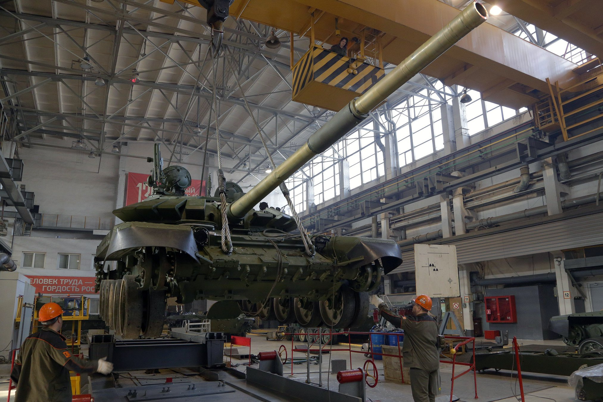

Т-90М «Прорыв»
Глубокая модернизация ОБТ Т-90
АО «Научно-производственная корпорация «Уралвагонзавод» имени Ф. Э. Дзержинского»
АО «Концерн «Уралвагонзавод» - интегрированная структура, объединяющая промышленные предприятия, научно-исследовательские институты и конструкторские бюро. Это известные разработчики и производители артиллерии, бронемашин, подвижного грузового состава, легкорельсового транспорта, дорожно-строительной и другой техники. Концерн обладает мощным техническим и интеллектуальным потенциалом.
До конца существования СССР Уралвагонзавод являлся крупнейшим танкостроительным предприятием на планете, с численностью персонала свыше 40 тыс. работников (одновременно будучи крупнейшим работодателем данного промышленного региона). 27 апреля 1990 года Уралвагонзавод посетил Президент СССР М. С. Горбачёв, который обсудил с руководством предприятия перспективы конверсии оборонного производства с переходом на выпуск продукции невоенного назначения. С этого момента предприятие имеет диверсифицированную линейку продукции помимо собственно боевой техники.
Сегодня «Уралвагонзавод» производит грузовые вагоны, цистерны и боевые танки Т-90 и Т-14, играя важную роль в российском экспорте на международном рынке вооружений. В 2010 году он вернулся в список ста крупнейших мировых производителей оружия (из которого временно выбыл после обретения Россией независимости), составляющийся ежегодно Стокгольмским международным институтом исследования проблем мира (SIPRI), и заняв 90 место. В 2011 году снова вошёл в список SIPRI, поднявшись на 86 место.
Глубокая модернизация ОБТ Т-90
Основной боевой танк семейства Т-72
Боевая машина поддержки танков / Ракетный танк